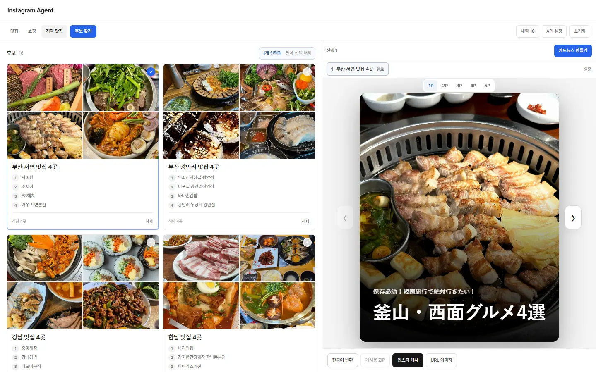
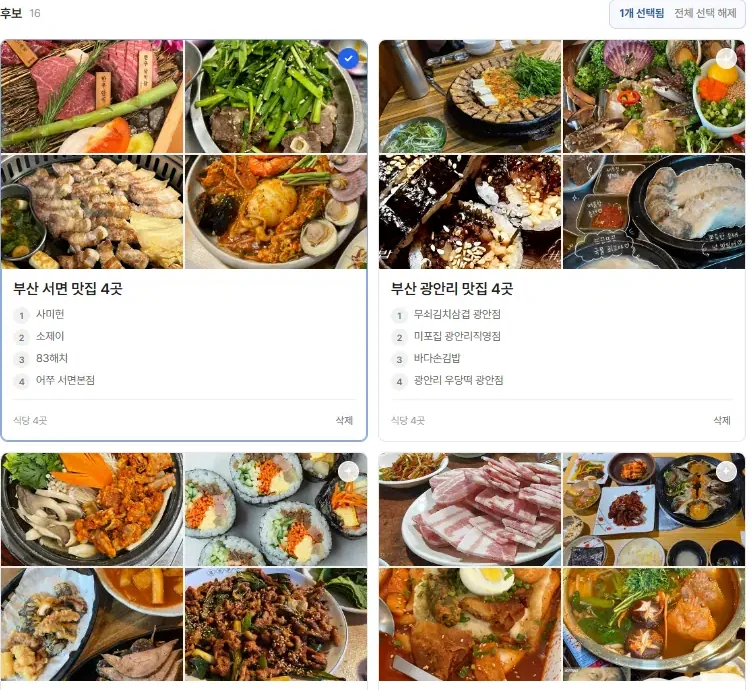

01 WEB PROJECT · AI AUTOMATION
instagram card agent
한국 맛집을 일본어 카드뉴스로 제작하는 자동화 도구
- 프로젝트
- 개인 프로젝트
- 담당 역할
- 서비스 기획 · 바이브코딩
- 제작 기간
- 2026. 2 ~ 진행 중 (유지 보수)

이전의 카드뉴스 제작 경험
5년 전, 카드뉴스로 인스타그램 계정을 운영했다. 3주 만에 팔로워 500명을 모았지만, 한 편을 만드는 데 시간이 너무 오래 걸려 접었다.
매번 가게를 찾고, 사진을 고르고, 글을 쓰는 일을 반복해야 했다.
올해 초 AI가 발전하면서 이 반복 작업을 에이전트화하면 어떨까 생각했다. AI 에이전트와 바이브코딩을 깊이 익히고, 개발자가 아닌 내가 어디까지 만들 수 있는지 확인해 보고 싶었다.
한국 맛집을 일본에 소개하기까지
평소 자영업과 자동화에 관심이 많았다. AI를 활용하면 혼자서도 새로운 시장에 도전할 수 있겠다는 생각이 들었다. 이에 한국을 찾는 외국인 관광객이 늘어나는 것을 보며, 일본인 여행자에게 한국의 동네 맛집을 소개해 보기로 했다. 5년 전에는 작업 시간이 길어 포기했던 것을 이번에는 자동화 도구로 다시 시작해 제작보다 운영과 성과에 시간을 써보고 싶었다.
- 시장 규모
2025년 한국을 찾은 외국인은 1,880만 명이였다. 그중 일본인 관광객은 약 365만 명이었다. 방한 관광객 통계 ↗
- 내게 필요한 자동화 도구를 제작
내가 원하는 자동화 툴을 만들고자 했다. 직접 만들고, 운영하며 필요한 기능을 개선하며, 바이브 코딩을 조금씩 알아가게 되었다.
- AI가 넓힌 가능성
예전에는 불가능하였던 영역들을 이제는 도전할 수 있게 되었다. 그 중, 언어의 영역은 AI를 잘 활용할 수 있는 구간 중 하나였다.
맛집 4곳을 고르면 생성되는 카드뉴스
맛집 탐색부터 카드뉴스 게시까지의 과정을 네 단계로 연결했다. AI가 후보 정리와 제작을 맡고, 사용자는 소개할 가게를 고른 뒤 완성된 결과를 확인하고 게시를 승인한다. 이와 같은 흐름은 아래에서 확인이 가능하다.
- 가게 탐색 Naver와 Kakao의 지도 API로 음식점을 찾고, 폐업한 매장은 제외하여 보여준다.
- 후보 정리 한 번에 4~6가량의 후보들을 노출시켜 고를 수 있게 보여준다.
- 카드뉴스 제작 선택한 가게의 사진과 정보를 바탕으로 일본어 카드뉴스를 만든다.
- 확인 후 게시 완성된 결과를 미리 보고 승인하면, Make.com과 Meta API를 통해 인스타그램에 자동 게시된다.

자동화의 기준은 기능의 수보다 실제로 줄일 수 있는 작업 시간에 두었다. 사용자는 소개할 가게를 고르고 게시를 결정하는 데 집중하고, 도구는 그 사이의 조사와 제작을 맡도록 설계했다. 하지만 전체 흐름을 연결한 뒤에도 사진이 맞지 않거나 일본어가 어색하면 결국 다시 손을 봐야 했다. 기능이 작동하는 것만으로는 제작의 부담이 충분히 줄어들지 않았던 것이다.
계속된 에이전트 제작의 실패
사진은 모였지만,카드에 맞지는 않았다
사진을 수십 장 모아도 음식과 관계없는 이미지가 섞이거나, 정작 카드에 쓸 사진이 부족했다. AI에게 수정을 요청해도 비슷한 문제가 반복됐고, 한 부분을 고치면 다른 부분에서 오류가 생기기도 했다.
일본어를 다듬어도,내용은 부족했다
문법과 표현을 고치는 것만으로는 충분하지 않았다. 문장은 자연스러워져도 어느 가게에 붙여도 비슷한 소개가 나왔다. 작성 방식의 문제인지, 처음부터 주어진 정보가 부족한 것인지 확인할 필요가 있었다.
검사를 늘렸지만,시간과 오류도 늘었다
조건과 검사를 추가할수록 제작은 느려지고 잘 되던 기능까지 실패했다. 수정 요청을 반복하는 동안, 내가 서비스 구조를 이해하지 못하면 무엇을 바꾸고 줄여야 하는지도 정확히 지시하기 어렵다는 것을 알게 됐다.
문제점들을 작게 쪼개어 해결한 경험
문제는 사용자로서 직접 발견했고, 수정할 코드는 AI가 작성했다. 하지만 수정 요청만으로 오류가 해결되지는 않았다. 이후에는 기능을 나눠 직접 실행해 보고, 성공한 수정만 서비스에 반영하는 방식으로 바꿨다.
-
문제가 있는 기능을 모듈로 떼어 수정했다
전체 서비스에서 수정을 반복하는 대신, 문제가 생긴 기능을 별도 모듈로 분리했다. 해당 기능만 업데이트하고 직접 실행하면서 원하는 결과가 나오는지 확인했다. 그중 성공한 수정부터 서비스에 다시 붙이며, 한 번에 바꾸는 범위를 좁혀 개발을 진행했다.
-
직접 소스를 넣어 보며, 원고가 빈약해지는 이유를 찾았다
소개할 내용이 부족한 경우에는 내가 직접 소스를 가져와 AI에게 원고를 작성시켰다. 어떤 정보를 줬을 때 내용이 구체적으로 나오는지 비교하면서, 입력 정보와 작성 방식 중 어디에 문제가 있는지 확인했다. 반복해서 필요한 정보와 구성은 일부 템플릿으로 정리해, 매번 AI가 처음부터 판단해야 하는 범위를 줄였다.
-
서비스 구조를 이해한 뒤, 줄일 단계를 직접 정했다
기능을 나누고 다시 붙이는 과정을 거치며, 각 단계가 어떤 역할을 하고 어디에서 시간이 걸리는지 이해하게 됐다. 이를 바탕으로 중복되는 작업이나 필요 이상으로 반복되는 검사를 찾아 조정했다. 줄일 부분과 남길 부분을 내가 정하고, 속도와 품질의 균형을 잡도록 개발 방향을 지시했다.
시행착오에서 얻게된 점
-
도구 선택
무료 모델들의 연결
OpenCode와 OpenRouter 등을 활용하면서, 제공처별로 무료 LLM 모델을 찾아 쓰는 법을 익혔다. 여러 모델을 직접 써 보며 결과와 속도를 비교했고, 필요한 작업에 맞춰 비용을 최적화하는 경험을 쌓았다.
-
문제 분해
“해줘”로 안 풀릴 때는, 문제를 더 작게 나눴다
전체를 한 번에 고치려 할 때보다, 문제가 있는 부분만 떼어 업데이트했을 때 원인과 결과를 확인하기 쉬웠다. 막힌 일을 작게 나누고 하나씩 확인하는 방식은 바이브 코딩뿐 아니라 다른 문제를 풀 때도 적용할 수 있겠다고 느꼈다.
-
직접 검증
직접 돌려 봐야 알 수 있었다
수정된 기능을 직접 실행하고, 이전에 잘 되던 결과도 다시 확인했다. 오류를 반복해서 찾다 보니 어디를 의심하고 어떤 조건에서 다시 돌려 봐야 하는지 조금씩 보이기 시작했다. QA 실력도 나날이 늘어가는 중이다.
PM으로서, 개발을 지휘하는 기준도 구체적이어야 했다
이 프로젝트에서 내가 맡은 일은 사용하면서 생긴 불편을 수정할 수 있는 문제로 바꾸는 것이었다. “사진이 이상하다”에서 멈추면 다음 요청도 막연해졌다. 어떤 사진이 필요한지, 어느 단계에서 잘못됐는지, 무엇을 확인하면 해결됐다고 볼 수 있는지를 구체적으로 정해야 했다. 문제를 정의하고, 수정 범위를 정하고, 결과를 확인하는 일이 개발 방향을 결정했다.
도구를 고를 때도 결과와 속도, 비용을 함께 봐야 했고, 오류가 생기면 영향이 큰 부분부터 나눠 고쳐야 했다. 이런 과정을 거치며 기획과 검증이 별개의 일이 아니라는 것을 배웠다. 직접 써 보고, 문제를 좁히고, 고친 결과를 다시 확인하는 짧은 반복을 만드는 것이 앞으로도 내가 제품을 개선할 때 가져갈 기준이다.
다행인지, 아직은 AI에게 ‘딸깍’, “해줘”만으로
끝나지 않는 영역들이 있었다.정확히는 안 된다기보다, 내가 무엇을 원하는지 구체적으로 말할수록
원하는 결과가 나올 가능성도 높아졌다.물론 같은 요청에도 결과가 달라져, 어느 정도는 ‘뽑기운’도 있었다.
결국 그 운에만 기대지 않으려면, 내가 원하는 것을 정확히 알고
직접 돌려 보며 확인해야 했다.
실제 카드뉴스 제작 결과